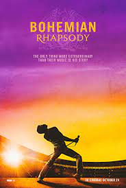

- Nome: David Gomes Nascimento
- Idade: 23 anos
- Estado: Rio de Janeiro
Queen

Queen are a British rock band formed in London in 1970. Their classic line-up was Freddie Mercury (lead vocals, piano), Brian May (guitar, vocals), Roger Taylor (drums, vocals) and John Deacon (bass). Their earliest works were influenced by progressive rock, hard rock and heavy metal, but the band gradually ventured into more conventional and radio-friendly works by incorporating further styles, such as arena rock and pop rock.
My Favorite Songs
- Bohemian Rhapsody
- Love of My Life
- We Will Rock You
- Somebody To Love
- I Want To Break Free
- Don’t Stop Me Now
Movie
Bohemian Rhapsody is a 2018 biographical musical drama film directed by Bryan Singer from a screenplay by Anthony McCarten, and produced by Graham King and Queen manager Jim Beach. The film tells the story of the life of Freddie Mercury, the lead singer of the British rock musical band Queen, from the formation of the band up to their 1985 Live Aid performance at the original Wembley Stadium. The film stars Rami Malek as Mercury, with Lucy Boynton, Gwilym Lee, Ben Hardy, Joe Mazzello, Aidan Gillen, Tom Hollander, and Mike Myers in supporting roles. Queen members Brian May and Roger Taylor also served as consultants on the film. A British-American venture, the film was produced by Regency Enterprises, GK Films and Queen Films, with 20th Century Fox serving as distributor.